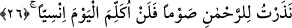

sûretidir, su ise ilâhî feyzin sırrının sûretidir. Allah her şeyi kendi yerinde icrâ etmiştir.
Çünkü her kerâmet, sâlik onunla tahalluk ve tahakkuk ettiği zaman sâlikin amelinin bir
sûretidir. Ayrıca hurmanın büyüyüp yetişmesini Allah, hep dikme, sulama, aşılama gibi
çalışmayı gerektirecek şeylere bağlamıştır. Su ise böyle değildir onun yere dayalı bir
sebebi olmayıp Allah tarafından verilmiş ve gökten indirilmiştir. Bundan dolayı da
nehir Meryem için sebepsiz (onun gayreti olmadan) akıtılmıştır.
26. “Ye, iç, gözün aydın olsun! Eğer insanlardan birini görürsen: ‘Ben Rahman
için (susma) oruc(u) adadım, bugün hiçbir insanla konuşmayacağım’ de.”
O hurmanın meyvesinden “ye” ve nehrin suyundan “iç.”
Bu hâdise, Hz. İsa için bir irhâs (peygamberlik öncesi görülen olağanüstü durum)
veya Hz. Meryem için bir kerâmettir. Gerekli şart bulunmadığı için bir mûcize değildir.
Mûcizenin şartı ise meydan okumaktır. Nitekim Bahru’l-ulûm’da böyle geçmektedir.
İmam Râzî tefsîrinde şöyle der: “Âyette ‘yemek’ önce zikredilmiştir. Çünkü
kendisinden çok kan aktığı için Meryem’in yemeye ihtiyâcı, suya ihtiyacından daha
fazladır. Eğer denilirse ki: “Korkunun zararı daha çoktur. Çünkü o, ruhun elemidir.
Açlık ve susuzluk ise bedenin elemidir.
Yine nakledildiğine göre bir koyun aç bırakılmış, sonra ona ot verilmiş ve yanına bir
kurt bağlanmış. Kurdu gören koyun otu yememiş. Sonra kurt uzaklaştırılmış ve koyunun
ayağı kırılmış. Koyun bu durumda otu yemiş. Bu da gösteriyor ki korkunun elemi daha
şiddetlidir. Öyleyse Allah ruhun zararını bertaraf etmeyi neden ertelemiştir?” Biz buna
cevaben deriz ki: Cebrâil onu müjdelediği için Meryem’in korkusu azdı. Yeniden
korkusunun giderilmesine ihtiyacı yoktu.
Loğusalara hurma yedirmenin ve bebeğin damağına hurma ve benzeri bir şey çiğneyip
sürmenin o zamanın âdeti olduğu söylenir. Nitekim bir hadiste şöyle buyrulmuştur:
“Kadın çocuk doğurduğunda ilk yemeği yaş hurma, yoksa kuru hurma olsun. Çünkü
eğer ondan daha üstün bir yiyecek (loğusa için) olsaydı, İsa’yı doğurduğunda Allah
İmrân kızı Meryem’e onu yedirirdi.”[15]
Rebî‘ b. Haysem: “Bana göre loğusalar için hurmadan, hastalar için de baldan daha
üstün bir şey yoktur.” demiştir.
“Gözün aydın olsun.” Gönlünü rahat tut, seni üzen ve sana gam veren şeyleri
kalbinden at. Çünkü Allah, nehir akıtmak, kuru hurmayı yeşertmek ve zamanından önce
meyveyi verdirmek gibi olağanüstülüklerle senin günahsız olduğunu ispat etmiştir.
Meryem’i ayıplayanlar bu durumları görünce, babasız çocuk meydana gelmesini
imkansız görmeyeceklerdir.